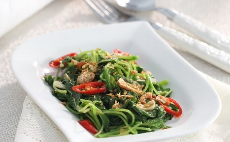

Pertama, Tumis Bayam
Bayam adalah salah satu jenis sayuran yang memiliki banyak kandungan gizinya. Sela...Readmore
Temukan Inspirasi Berbagai Jenis Masakan!
Bayam adalah salah satu jenis sayuran yang memiliki banyak kandungan gizinya. Sela...Readmore

Makanan yang memiliki rasa yang sangat lezat ini tidak lain adalah pancake durian, karena memiliki rasa du.. Readmore

Bila anda ingin menikmati hidangan sup ayam yang enak, anda bisa mencoba membuat sup ayam kembang tah.. Readmore